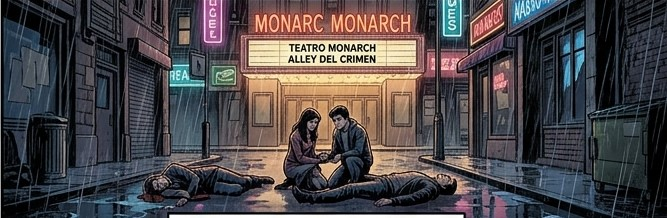

Teatro Monarch
El Teatro Monarch es un cine abandonado ubicado en el distrito Park Row de Gotham City. La familia Wayne lo visitó antes del asesinato de Thomas y Martha Wayne. El teatro ha servido con frecuencia como escondite para algunos de los enemigos teatrales de Batman, incluido el Joker.
